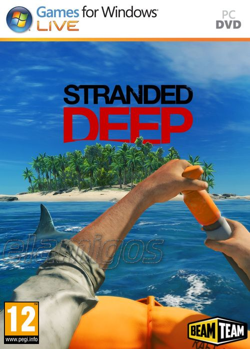

Stranded Deep 1.04 GB
Género: Survival
Ponte en la piel de un superviviente de un accidente aéreo varado en algún
lugar del Océano Pacífico. Enfréntate a algunos de los escenarios más
peligrosos que te ofrecerán una experiencia diferente cada vez que juegues.
Busca. Descubre. Sobrevive.